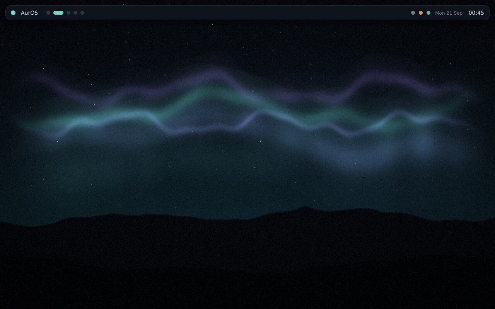

- What it is
- A Linux desktop for the Windows PC you already have
- You download
- One .exe
- Restarts
- Exactly one
- Secure Boot
- Stays on
- Windows
- Stays on the disk; one button puts it back
- Proven on a real PC’s disk
- Not yet
Sheet 1 of 1 · pre-release
For the PC that “can’t run Windows 11”
Keep the computer. Change what it runs.
AurOS is a Linux desktop you install from inside Windows by downloading one file. A wizard explains and asks. The PC restarts exactly once and comes up in AurOS. Windows stays on the disk, and until you say “it works”, it is still what the PC starts.
Try the desktop, here Watch the one restart
This sheet is AurOS’s own wallpaper code, ported to your browser and drawn for this visit. Seed …. · Keep this one
§1 The restart
Everything that matters happens in one restart, and it is written down.
Nothing on the drive changes before the restart. After it, the PC shows plain text while it makes room, copies AurOS, checks it, and switches the disk to its new layout by writing one sector. Then AurOS starts, in the same boot.
Before
In Windows
The installer checks the PC, reading only. It fixes what it can (Fast Startup, low space, BitLocker), downloads AurOS into C:\AurOS, and sets a start-up entry that is used once.
Drive: unchanged
The restart
Text on the screen
Windows is made smaller, a copy of how the PC starts Windows is kept, AurOS is written into the freed space and read back, and the new layout is committed in one sector.
Drive: Windows smaller, AurOS beside it
After
AurOS asks
“AurOS is on this computer. Have a look around. Nothing has been decided yet.” Yes makes AurOS the default. No sends the PC back to Windows.
Windows: still there either way
§2 The desktop
The shell is called aurshell. It paints straight to the screen through the kernel’s display interface (DRM/KMS): no X11, no Wayland compositor.
Big buttons, plain words, and one colour that means “you are here”.

§3 The ledger
Every line names where it was proven, because “tested” without a place is a word, not evidence.
Where it actually is, without rounding up.
- Real Windows
The installer starts, checks the PC, fixes what it finds, and downloads the whole of AurOS.
On a Windows machine on every change to the code, including the published file, fetched from its public link.
- Simulated PC
Install, and putting Windows back, end to end, with Secure Boot on.
Virtual machines running real UEFI firmware with Microsoft’s keys. With and without a memory stick.
- Simulated PC
The power cut at 18 named instants of the install and the restore. Windows came back every time, every file byte-identical.
138 checks. Pull the plug yourself.
- Not yet
A real PC’s disk being made smaller and written.
The first real-PC attempt could not start the installer at all. That is fixed; the next result is the next piece of evidence.
- Not yet
A signed installer. Windows will say “Windows protected your PC”.
Signing needs a legal entity and a certificate. It is paperwork and money, not code.
§4 The calendar
Microsoft ended regular support for Windows 10 on 14 October 2025, then extended free security updates for enrolled home PCs to 12 October 2027.
Windows 10’s last free security update is a date, not a fault.
On that day a PC enrolled in Microsoft’s Extended Security Updates for Windows 10 stops getting them. Nothing about the machine changes. Its screen, its keyboard and the photos on it are exactly as good on the 13th.
AurOS is being built for that PC. It is not ready to be trusted with your only computer yet, and this site will say so until it is. If you have a spare one, it is ready to be tried.
§5 Why bother
A working computer is the most finished thing most people own.
It was mined, refined, assembled and shipped once. Replacing it does all of that again, and the old one usually goes in a drawer or a skip, still working. The cheapest computer is nearly always the one already on the desk.
The hard part was never Linux. It was the install: a memory stick, a firmware menu, a word like “partition”. AurOS is an attempt to make that part a wizard, and to be exactly as careful with someone’s disk as they would be if they understood it.
Three doors